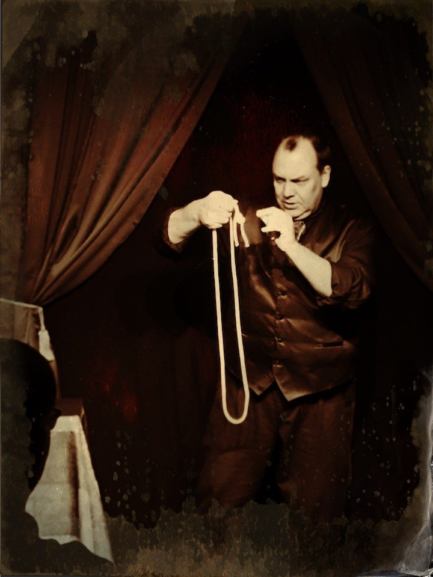
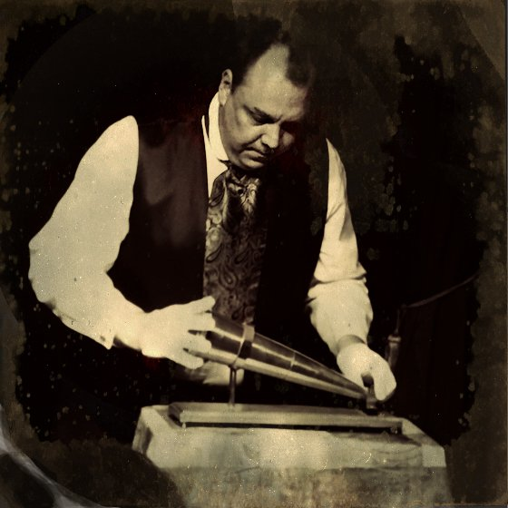

The Show
Parlor magic, a seance, and the room as the stage
The original Astonify Show was a theatrical recreation of a Victorian parlor magic performance, combined with a full light spirit seance. Both were popular in the nineteenth century. The combination is rarely seen today.
The show has grown since then. It is no longer strictly a period piece, but the heart of it is the same: stage magic, sleight of hand, mental mysteries and grand illusion, performed close enough to touch, for a small audience who become part of the evening.
Some routines the whole room does together. Others need a guest or two to step forward. Nobody is pushed into anything, and everybody ends up closer to the magic than they expected.
It is a very unusual and pleasant evening of entertainment, with a slightly spooky edge. And yes, the theatrical seance is still part of the show.


History you can feel
Woven through the evening are true stories from the age of the parlor and the seance. Audiences regularly tell us they did not expect a history lesson, and came away smarter as well as amazed.
Not a show for children
Astonify is designed for ages sixteen and up. It is a sophisticated evening of marvels and mysteries for adult minded people. (In December there is a family version, The Ghosts of Christmas Past.)
Where it works best
Astonify is built for a room rather than a theatre: about fifty guests, close enough to see everything. It has played a purpose built parlor theatre, a history museum housed in an old county jail, and a fifty seat theatre Dean Carnegie ran himself. Historic houses and museums, private clubs and private homes, and intimate performance spaces all suit it.
Venues and hosts hire the show for the evening. Tell us the date, the room and roughly how many guests, and we will take it from there.